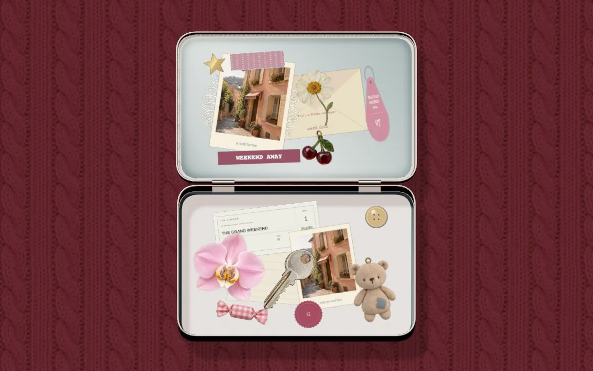

PROJECT NOTES / 2026.09
TIN
A private tin box for photos, notes, and the little things of your day

TIN is a small silver tin for keeping the little things of a day: a photo, a ticket stub, a note, something you can't quite explain wanting to keep. Tap the lid to open it, then pull objects up from the long drawer at the bottom of the screen.
The drawer holds 40 original objects in six categories, from hair ties and cassette tapes to lace, wax seals, flowers and shells. Drag them in, turn and resize them with two fingers, stack them, and add your own photos and words to ticket stubs, receipts, envelopes and key tags. When you can't decide, the Random button fills the whole tin for you.
Five themes change the desk around it, and a finished tin exports as a PNG. Your photos and pieces are saved only on your own device. Nothing is uploaded, so the tin stays yours.